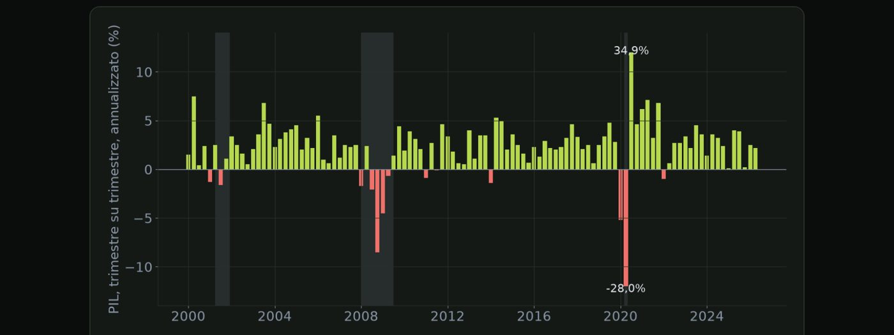
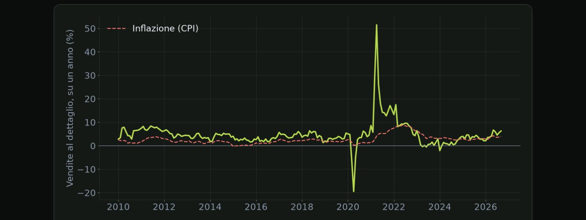
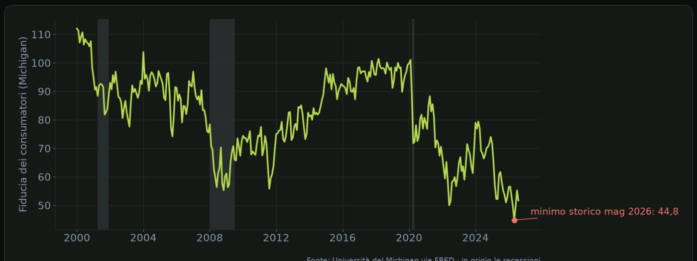
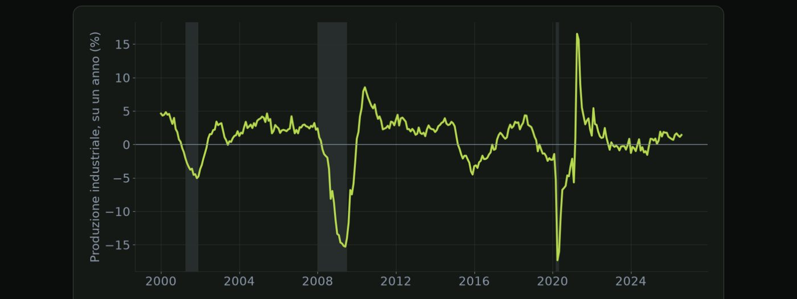

Materiale educativo, non consulenza finanziaria. Il trading con leva su forex, CFD e futures comporta un rischio elevato: puoi perdere tutto il capitale. Numeri, esempi e simulazioni non prevedono risultati futuri.
Cosa misura il PIL, come si legge negli Stati Uniti e in Europa, e cosa vuol dire recessione.
Apriamo il modulo sulla crescita con il dato più completo di tutti, il prodotto interno lordo, il PIL. Misura il valore di tutto quello che un paese produce in un certo periodo. In questa lezione vediamo come si legge, e una differenza tra Stati Uniti ed Europa che confonde molti trader.
Il PIL misura il valore di tutti i beni e servizi prodotti in un paese in un certo periodo, di solito un trimestre. Si può scomporre in quattro parti, cioè i consumi delle famiglie, gli investimenti delle imprese, la spesa pubblica, e le esportazioni meno le importazioni. Negli Stati Uniti i consumi pesano per circa due terzi. Si guarda sempre il PIL reale, cioè depurato dall'inflazione, altrimenti un aumento dei prezzi sembrerebbe crescita.
| Come si esprime | tasso annualizzato |
| Esempio | +2,0% annualizzato |
| Equivale a | circa +0,5% nel trimestre |
| Come si esprime | variazione sul trimestre |
| Esempio | +0,5% sul trimestre |
| Equivale a | circa +2,0% annualizzato |
Ecco la differenza che confonde molti. Negli Stati Uniti la crescita trimestrale viene espressa come tasso annualizzato, cioè come se quel ritmo continuasse per un anno intero. Un più due per cento annualizzato corrisponde a circa lo zero virgola cinque per cento nel trimestre. Nell'eurozona, invece, si pubblica di solito la variazione sul trimestre precedente, non annualizzata. Quindi un più zero virgola cinque europeo e un più due americano descrivono più o meno lo stesso ritmo di crescita. Confrontarli senza saperlo porta a conclusioni sbagliate.
Due cose da sapere su stime e recessione. Negli Stati Uniti il PIL esce in tre stime successive, la preliminare circa un mese dopo la fine del trimestre, poi la seconda e la terza a distanza di un mese l'una dall'altra. La preliminare è quella che muove di più il mercato. In Europa si parla spesso di recessione tecnica quando il PIL cala per due trimestri consecutivi. Negli Stati Uniti, invece, l'inizio e la fine ufficiali di una recessione vengono stabiliti da un comitato di economisti di un istituto di ricerca, il NBER, che guarda molti indicatori, e spesso lo fa con mesi di ritardo.

Ecco la crescita del PIL americano, trimestre per trimestre, annualizzata. Le zone grigie sono le recessioni ufficiali. Nel 2008 e nel 2009 si vedono più trimestri negativi di fila. Nel 2020 il secondo trimestre crolla del ventotto per cento annualizzato, e il terzo rimbalza del trentaquattro virgola nove: numeri enormi, perché l'annualizzazione moltiplica il movimento di un solo trimestre. E nel 2022 c'è un trimestre negativo senza recessione: la definizione dei due trimestri negativi non è quella ufficiale.
I sondaggi alle imprese che arrivano prima di tutti gli altri dati.
Il PIL arriva con un mese di ritardo rispetto alla fine del trimestre. Per capire prima dove sta andando l'economia, il mercato guarda i sondaggi alle imprese, i PMI e gli ISM. Sono tra i primi dati a uscire ogni mese, e si leggono in un modo molto semplice.
Vediamo come funzionano. Ogni mese si intervistano i responsabili degli acquisti di centinaia di aziende, persone che sanno bene quanto lavoro sta arrivando. Le domande sono semplici. Gli ordini, la produzione, l'occupazione e i prezzi pagati, rispetto al mese prima, sono migliorati, rimasti uguali o peggiorati? Le risposte vengono trasformate in un indice. Il cinquanta è lo spartiacque. Sopra il cinquanta l'attività è in espansione, sotto il cinquanta è in contrazione, e più ci si allontana dal cinquanta più il movimento è forte.
| Indice | Chi | Quando |
|---|---|---|
| ISM manifatturiero | USA | primo giorno lavorativo del mese, 16:00 |
| ISM servizi | USA | terzo giorno lavorativo del mese, 16:00 |
| PMI flash | USA, eurozona, Regno Unito | verso il 20 del mese stesso |
| PMI finali | USA, eurozona, Regno Unito | primi giorni del mese successivo |
Oltre al numero principale, conviene guardare tre voci interne. I nuovi ordini, che anticipano la produzione dei mesi successivi. Se gli ordini crollano, la produzione seguirà. I prezzi pagati, che anticipano l'inflazione, e che il mercato guarda molto nei periodi in cui l'inflazione è al centro dell'attenzione. E l'occupazione, che dà un indizio sul rapporto sul lavoro, come abbiamo visto nel modulo precedente.
Il motore dell'economia americana, misurato ogni mese.
Negli Stati Uniti i consumi delle famiglie valgono circa due terzi dell'economia. Capire quanto spendono gli americani significa capire, in buona parte, dove va l'economia. In questa lezione vediamo il dato più seguito sui consumi, le vendite al dettaglio.
Le vendite al dettaglio misurano quanto hanno incassato i negozi americani in un mese, sia quelli fisici sia quelli online. Attenzione a un dettaglio. Il dato è espresso in valore, non al netto dei prezzi, quindi un aumento può dipendere anche dall'inflazione e non solo da maggiori acquisti. Viene pubblicato a metà mese dal Census Bureau, l'ufficio del censimento americano, alle quattordici e trenta ora italiana.

Ecco le vendite al dettaglio americane, confrontate con un anno prima. Ad aprile 2020 crollano del diciannove virgola cinque per cento; un anno dopo, ad aprile 2021, crescono del cinquantuno virgola cinque, ma solo perché il confronto è con il mese peggiore. Ricorda anche che il dato è nominale: la linea tratteggiata è l'inflazione. Se le vendite crescono del tre per cento e i prezzi del quattro, in realtà si compra di meno.
| Voce | Perché conta |
|---|---|
| Vendite totali | il titolo, ma risente di auto e carburanti |
| Senza auto | toglie le vendite di automobili, molto variabili |
| Gruppo di controllo | la parte che entra nel calcolo del PIL |
| Revisione del mese prima | spesso ampia |
| Vendite totali | +0,8%, sopra le attese |
| Carburanti | prezzi della benzina in forte aumento |
| Gruppo di controllo | 0,0%, sotto le attese |
| Lettura | si spende di più per la benzina, non per altro |
Cosa dicono i sondaggi sulla fiducia, e perché vanno presi con cautela.
Oltre ai dati su quanto si produce e si spende, il mercato guarda anche come si sentono famiglie e imprese. È il cosiddetto umore dell'economia, misurato con i sondaggi sulla fiducia. In questa lezione vediamo i principali, e come leggerli senza farsi ingannare.
| Sondaggio | Paese | Quando |
|---|---|---|
| Università del Michigan | USA | preliminare a metà mese, finale a fine mese |
| Conference Board | USA | ultimo martedì del mese |
| Istituto Ifo | Germania | ogni mese, sulle imprese |
| ZEW | Germania | ogni mese, sugli analisti finanziari |
I sondaggi sulla fiducia contano per tre motivi. Possono anticipare i comportamenti, perché una famiglia preoccupata per il futuro tende a rimandare gli acquisti importanti, e un'impresa pessimista rimanda gli investimenti. Arrivano presto, prima dei dati su consumi e produzione dello stesso mese. E rivelano le aspettative, comprese quelle di inflazione, che come abbiamo visto le banche centrali seguono con attenzione.

Ecco la fiducia dei consumatori americani, dal sondaggio dell'Università del Michigan. Scende nelle recessioni, nelle zone grigie, ma guardate gli ultimi anni: a maggio 2026 tocca il minimo storico, quarantaquattro virgola otto, più basso che nel 2008. Eppure in quel periodo l'economia non era in recessione. È il motivo per cui questi sondaggi vanno presi con cautela: raccontano l'umore, non sempre i comportamenti.
Allo stesso tempo, vanno presi con cautela. Quello che le persone dicono non coincide sempre con quello che fanno. Ci sono stati periodi in cui la fiducia dei consumatori era molto bassa, mentre i consumi continuavano a crescere. Le risposte sono influenzate dalle notizie del momento, come il prezzo della benzina, la politica o l'andamento della borsa. Per questo conta più la tendenza di diversi mesi nella stessa direzione che un singolo dato.
Produzione industriale e ordini di beni durevoli: cosa dicono e quanto pesano.
Chiudiamo il modulo sulla crescita con i dati che riguardano le fabbriche, cioè la produzione industriale e gli ordini di beni durevoli. Negli Stati Uniti l'industria pesa meno dei servizi, ma questi dati sono molto sensibili ai cambiamenti del ciclo economico.
Iniziamo dalla produzione industriale. Misura quanto producono le fabbriche, le miniere e le aziende che forniscono energia. Negli Stati Uniti viene pubblicata dalla Fed, verso metà mese. In Europa è molto seguita la produzione industriale tedesca, perché la Germania è il cuore industriale dell'eurozona, e un suo calo si riflette sull'euro.

Ecco la produzione industriale americana, rispetto a un anno prima. Nelle recessioni, le zone grigie, scende molto: ad aprile 2020 il calo è del diciassette virgola tre per cento. Fuori dalle crisi oscilla di pochi punti intorno allo zero. Per un trader conta soprattutto la sorpresa rispetto alle attese, e il fatto che l'industria è più ciclica dei servizi: è spesso tra le prime a rallentare.
Passiamo agli ordini di beni durevoli. Sono gli ordini di beni pensati per durare almeno tre anni, come macchinari, elettrodomestici, automobili e aerei. Il dato è molto variabile, perché basta un grande ordine di aerei commerciali per farlo salire o scendere di diversi punti in un solo mese. Per questo il mercato guarda soprattutto gli ordini esclusi i trasporti, e gli ordini di beni capitali esclusa la difesa, che sono un buon indizio degli investimenti futuri delle imprese.
| Ordini totali | −5%, molto sotto le attese |
| Motivo | un grande ordine di aerei nel mese precedente |
| Esclusi i trasporti | +0,4%, sopra le attese |
| Lettura | la domanda di fondo è buona |
Spunta ogni punto solo se sapresti spiegarlo a voce a un altro trader.
Materiale educativo, non consulenza finanziaria. Il trading con leva su forex, CFD e futures comporta un rischio elevato: puoi perdere tutto il capitale. Numeri, esempi e simulazioni non prevedono risultati futuri. · riskly.trade